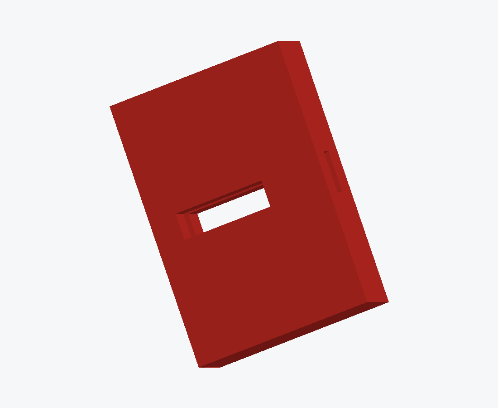
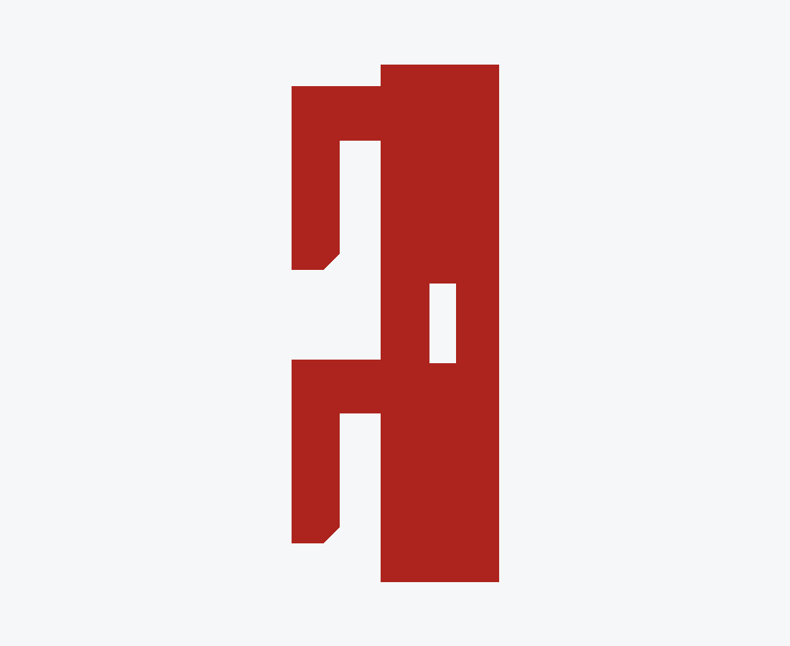
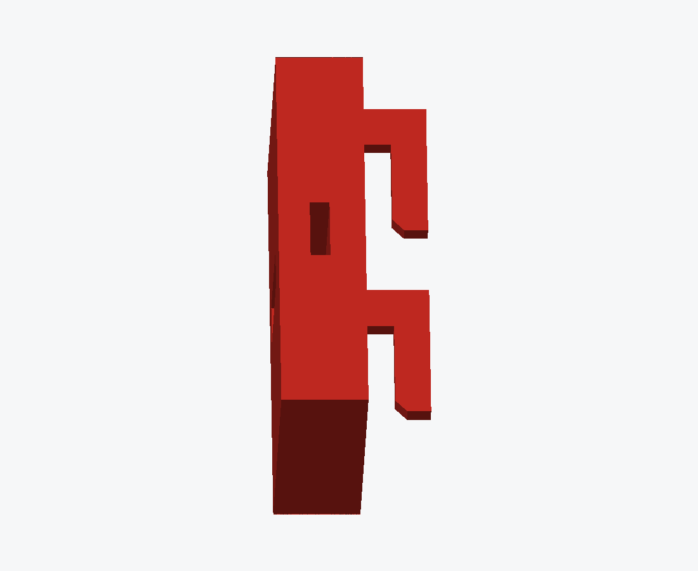
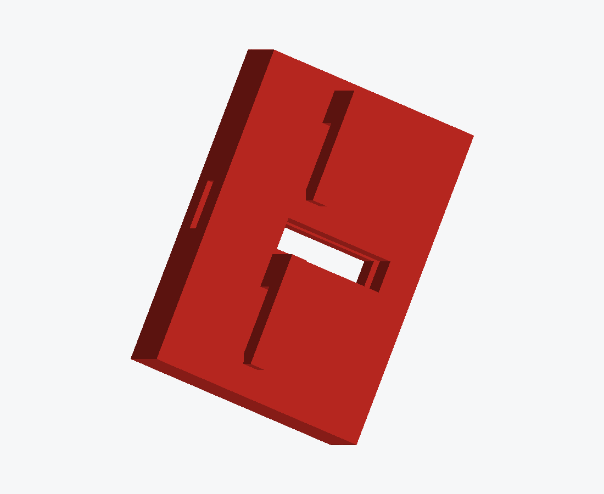

A pegboard on a desk frame that was never meant to have one.
3D printed brackets that hook into the slotted uprights of an Ergotron LAN Organizer 3000 and hang an IKEA SKÅDIS on them. No drilling, no wall, no rail. Free files, MIT licensed.
Drag to spin, scroll to zoom. Four red brackets, two per upright — orbit around the back to see them.
Why this exists
An Ergotron LAN Organizer 3000 is a 2004-vintage steel desk frame with punched slots up every upright. It already holds a filament spool shelf; the obvious next thing to hang on it is somewhere to put tools. IKEA's SKÅDIS is cheap and the accessory ecosystem is enormous, but it is designed to be screwed to a wall, and the whole point of the Ergotron is that nothing gets drilled.
So the board needs to hang on the slots that are already there. The hook that grips the upright is the one already fit-verified on the real desk by the spool shelf's gauge prints, which meant the only genuinely new problem was how the board attaches to the bracket.
The joint
A DIN 562 M4 square nut — 2.2 mm thick, 7 mm across the flats — lives in a cavity inside the bracket. It slides in from the plate's outboard edge while the bracket is still in your hand, and once the bracket is on the desk there is no way for it to fall out. IKEA's own decorative M4 screw goes in from the front, through the board, through a 4 mm wall, and into that nut.




Four things make that cavity work rather than merely fit:
- It is closed on the board side by 4 mm of solid wall, so the board clamps flat against the plate and the nut is not something the board has to sit on.
- It is 12 mm longer than the nut, and that length is the left-right adjustment. Slide the board where you want it, then tighten.
- It is 7.4 mm tall against a 7.0 mm nut — comfortably under the nut's 9.9 mm diagonal — so the nut cannot rotate and you can tighten the screw one-handed from the front.
- Tightening pulls the nut forward onto that wall, which turns the joint into an ordinary clamped bolt: board between the screw head and the plate.
The part you actually print. 33 × 48 mm, 11 mm thick, about 8 g in ASA.
What the ruler got wrong
Every dimension in this project that was assumed turned out to be wrong, and every one that was measured has held. Two of the measured ones rewrote the part.
The board is 6.0 mm, not 4.6. Both community SKÅDIS libraries quote 4.6 mm, and an earlier version of this bracket believed them — it built its pegs as boardThickness + 0.2, so against a real board they finished 1.4 mm short of reaching through it and the retaining prong clamped the board instead of standing clear in front of it.
The decorative screw is 15 mm. Through a 6 mm board that leaves 9 mm of screw behind the board with nowhere to go. The old 5.4 mm plate would have let the tip stand proud of its own back face and jam against the upright's steel. So the plate thickness is not a choice — it is derived:
plateThickness = screwLength - boardThickness + screwTipClearance
= 15.0 - 6.0 + 2.0
= 11.0 mmChange the screw and the plate follows. The build refuses outright if the tip would come within 0.5 mm of the back face.
There is a happy side effect. Bending stiffness goes as thickness cubed, so 5.4 → 11.0 mm is 8.5× stiffer out of plane. At the worst nut position a bracket's share of a 15 kg loaded board comes to 0.118 MPa against ASA's ~45 MPa — a 380× margin — which is why the plate carries no stiffening rib. It would be holding up nothing.
Two grids that do not agree
One channel per bracket, four brackets per board, two per upright. That moves vertical alignment out of the printed part and into the assembly — where the upright's 25.4 mm slot pitch has to meet the board's 40 mm one. A screw has 11 mm of freedom inside its 15 mm slot, and that is the entire budget:
| Brackets apart | Nearest board rows | Mismatch | |
|---|---|---|---|
| 3 × 25.4 = 76.2 mm | 2 × 40 = 80 mm | 3.8 mm | works |
| 8 × 25.4 = 203.2 mm | 5 × 40 = 200 mm | 3.2 mm | works, better leverage |
| 2 × 25.4 = 50.8 mm | 1 × 40 = 40 mm | 10.8 mm | of 11.0 available |
| 1 × 25.4 = 25.4 mm | 1 × 40 = 40 mm | 14.6 mm | no |
The build script prints that list on every run, so it cannot be lost in a README nobody rereads. The left and right brackets are mirrored, each putting its channel 7.52 mm toward the middle of the desk — which is where the board's nearest slot column falls at the measured 735.04 mm upright spacing.
Printing
Lay the bracket on a side face so the hook profile is drawn inside every layer instead of stacked across them. In that orientation the cavity and the screw slot need no support at all — they run along the build direction — and organic supports grow only under the two hooks.
Put the outboard edge on the bed, so the cavity opens downward and prints as a plain vertical channel rather than a blind pocket with an unsupported ceiling. That is --rotate-x 90 for the left bracket and --rotate-x -90 for the right: the hands are mirrored, so they do not share a rotation.
| Setting | Value | Why |
|---|---|---|
| Material | ASA | creeps less than PETG under the hooks' permanent tension; PETG is fine for a fit test |
| Perimeters | 4 | stock "STRUCTURAL" profiles ship thinner than this |
| Infill | 40% | the hooks carry the whole board |
| Supports | organic, 0.25 mm gap | PETG welds itself to organic supports at the stock 0.2 |
| Per bracket | ~8 g, 35–40 min | four brackets to a board |
One thing to watch: the supports touch the side face of the hook tabs, which is the face that enters the slot. Put a caliper on a tab after cleanup — nominal 2.4 mm, and it has to stay under about 2.6 mm to enter a 3.2 mm slot.
What it replaced history
The first design hung the board on printed pegs: no bolts, no nuts, lower the board on and lift it off. It worked — a board hung on four of them with both ends engaged — and it was still replaced, because it has no adjustment anywhere. Four rigid posts have to enter four slots at once, so every error in the upright measurement, in print shrinkage, and in the board's own tolerance lands on whoever is holding the board. It came out 3–5 mm off left to right, and there was nothing to turn.
The second was this same channel, but milled open into the face of the plate. That fixed the adjustment and introduced three smaller problems: the board covered the pocket, so the nut had to be posted through a board slot with the board already hanging; the joint clamped board-to-nut rather than board-to-plate; and the board rested on four nuts instead of flat on four plates. Burying the cavity fixes all three at the cost of one 4 mm wall.
Both are gone from the working tree rather than kept as variants. Git history has them.
Get the files
STL, STEP and F3D for every part, plus the Fusion 360 scripts that generate them. Every user parameter drives geometry, with lengths in millimetres, angles in degrees and counts unitless — the build fails if that stops being true.
Attribution
This project started from Skadis to Kallax mount adapter by WegBier, licensed CC BY-NC-SA, which is where the idea of mounting to SKÅDIS with a printed part rather than bolting through it came from. That licence is incompatible with this repository's MIT licence, so none of that model's geometry has ever been reproduced here, and the current design shares no feature with it.
SKÅDIS interface dimensions are measurements of IKEA's product rather than anyone's authorship, cross-checked against franpoli/OpenSCADutil and TassSinclair/skadis, then re-measured on the board itself.